Guía de ManaLab
Qué hace cada parte de la app y cómo usarla, en Arena y Magic Online. Especialmente las funciones principales y el coach IA.
Qué es ManaLab
ManaLab guarda en tu PC cada partida que juegas en MTG Arena y Magic Online (MTGO) y te enseña qué funciona: tus porcentajes por mazo, por rival y por matchup, tus mulligans, tus errores y tus cambios de sideboard.
La app es gratis. Lo único de pago es el análisis de derrotas con IA: 5 € al mes, con prueba gratis.
Primeros pasos
- Descarga la versión portable (ZIP), descomprímela y abre ManaLab. No necesita instalación. Para actualizar más adelante, descomprime la versión nueva encima de la carpeta anterior: tus datos se conservan.
- En Arena, ve a Opciones › Cuenta y activa «Detailed Logs (Plugin Support)». Después reinicia Arena. Sin esto ManaLab no puede leer tus partidas de Arena. Magic Online no necesita ningún ajuste.
- La primera vez se abre la guía de inicio. Puedes volver a verla en Ajustes › Datos y acerca de ManaLab, con «Ver la guía de inicio».
- En el Panel pulsa «Iniciar registro». A partir de ahí cada partida, de Arena y de Magic Online, queda guardada sola. El indicador bajo el nombre de ManaLab en la barra lateral dice «Escuchando».
- Juega en ventana o en ventana sin bordes: el overlay no se ve en pantalla completa exclusiva.
Requisitos: Windows 10 u 11, y Arena, Magic Online o ambos.
Magic Online
ManaLab registra MTGO igual que Arena y no hay nada que configurar: ni «Detailed Logs» ni ajustes. Con ManaLab registrando, abre Magic Online y ManaLab lo recoge solo. La tarjeta de Magic Online del Panel dice «No detectado» hasta que encuentra el juego, y desde entonces sigue tus partidas como la de Arena.
Registra todos los formatos: tus manos iniciales y mulligans, si empezaste primero o segundo, tu mazo, las cartas que enseña el rival, la vida, la repetición y la cronología. Tu mazo toma el nombre con el que lo guardaste en Magic Online si la lista coincide exactamente y, si no, se nombra por sus colores; un nombre que escribas tú en Mazos nunca se sustituye.
- Overlay: las cartas que te quedan en el mazo y las que ha enseñado el rival, sobre Magic Online (mira Overlay).
- Capturas: la mano inicial, cada mulligan y el resultado, además de «Capturar momento». Tienen su propio interruptor en Ajustes › Partidas: «Hacer capturas de pantalla en Magic Online».
- Importar: en Partidas, pulsa «⋯» › «Importar partidas», elige «Log de Arena o Magic Online» y escoge un
mtgo.logpara traer partidas que jugaste con ManaLab cerrado. Cuentan como tuyas y las que ya tienes no se duplican. - Ubicación del registro: Ajustes › Partidas › «Archivo mtgo.log». Déjalo en «Predeterminado» salvo que Magic Online guarde su registro en otra carpeta.
Qué cambia en MTGO
- Las fases y las cartas giradas se deducen. Magic Online no las envía, así que ManaLab las deduce solo del registro. En la repetición, lo deducido lleva ≈, porque puede no ser exacto.
- Las fichas y los emblemas (Tesoro, Sangre, Mapa…) solo aparecen en la repetición. No salen en las cartas del rival, en tus listas de mazo ni en el overlay.
- El overlay puede enseñar menos que en Arena cuando el registro no trae el estado de la mesa.
- El banquillo: Magic Online no dice con qué mazo juegas las partidas 2 y 3 hasta que empiezan, así que ManaLab te lo pregunta (siguiente sección).
Más en la web: Tracker para Magic Online: qué guarda y cómo funciona.
Banquillo en Magic Online
Tras una partida, el registro de Magic Online repite tu lista original, aunque hayas cambiado el banquillo. La lista real solo llega cuando empieza la partida siguiente. Por eso, al empezar el banquillo, sale un panel pequeño «Banquillo · Partida N» sobre Magic Online. Nunca le quita el foco al juego y se cierra solo al empezar la partida siguiente. Tiene tres botones:
- «Usar este cambio» repite lo que hiciste la última vez contra el mismo mazo rival. Solo sale cuando hay una última vez.
- «Sin cambios» mantiene tu lista base.
- «Editar» abre ManaLab con tu mazo principal y tu banquillo lado a lado: − saca una copia, + mete una, y puedes buscar una carta. El contador de Entran y Salen te avisa si no cuadran, pero aun así puedes confirmar.
Si ignoras el panel, la lista queda sin confirmar. Entonces el overlay muestra «Lista sin confirmar», probabilidades aproximadas que empiezan por ≈ y «≥ N cartas fuera (sin identificar)»: ManaLab sabe cuántas cartas salieron de tu mazo, no cuáles. Corrígelo con «Corregir banquillo» en la barra lateral, durante la partida o entre partidas. Elijas lo que elijas, la lista real del registro manda siempre en cuanto Magic Online la envía.
También puedes corregirlo después de la partida: en Partidas, abre la partida, ve a la pestaña Partida y pulsa «Corregir banquillo». Se ofrece en tus propias partidas de Magic Online, a partir de la 2, cuya lista no se confirmó. Las partidas posteriores del match que tampoco estaban confirmadas se recalculan a partir de tu corrección, y la partida pasa a contar como confirmada en las estadísticas, la guía de sideboard y el análisis con IA.
Una partida que nunca se confirmó muestra «Banquillo sin confirmar» en su pestaña Partida. La guía de sideboard no cuenta sus cambios, y al análisis con IA se le dice que son desconocidos, no que no hubo ninguno.
A partir de la partida 2, la pestaña Partida enseña lo que metiste y sacaste del banquillo respecto a tu lista original (la partida 1), bajo «Respecto a la lista original». Si has vuelto a la lista original, no se muestra nada. Para apagar el panel, usa «Preguntar por el cambio de banquillo (Magic Online)» en Ajustes › Overlay; «Corregir banquillo» sigue disponible.
Panel: el estado del registro
El Panel te dice si ManaLab está registrando bien. El botón de arriba a la derecha inicia y detiene el registro. La fila superior tiene tres tarjetas:
- Arena: el estado del registro de Arena y si las capturas están activadas. Dice «Escuchando», «En partida», «No detectada» o «Detenido».
- Magic Online: lo mismo para MTGO. Dice «No detectado» hasta que ManaLab encuentra el juego.
- Match actual: el match que se está jugando ahora, con su número de partida y su evento.
Debajo, «Últimos matches» lista tus matches más recientes (pulsa uno para ver sus partidas) y «Actividad» muestra lo que hace ManaLab. Si hay una versión nueva, arriba sale un aviso. La barra lateral tiene también «Capturar momento» durante una partida y los botones ♥ Patreon y ♥ Ko-fi.
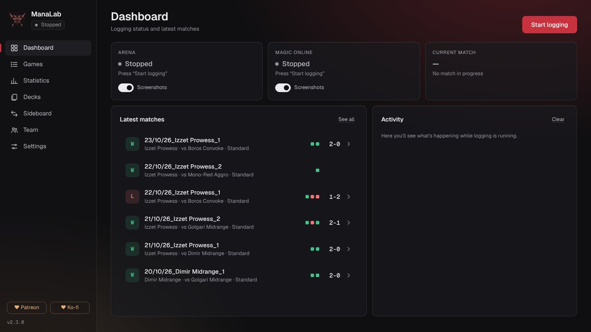
Partidas: tus matches
Aquí está todo el historial. La barra de filtros te deja buscar por rival, mazo o evento, y filtrar por formato (solo sale cuando tienes partidas en más de un formato), por mazo y por resultado: Todos, Victorias o Derrotas. Cada match se abre en sus partidas y muestra si empezaste primero o segundo.
El botón «⋯» («Más opciones de Partidas») tiene «Preparar sesión» e «Importar partidas». Cada partida muestra su formato; si ManaLab no pudo leerlo, o quieres cambiarlo, usa «Fijar el formato…» en el menú «⋯» de la partida.
Al abrir un match ves estas pestañas:
- Match: el resumen del match y sus partidas.
- Partida: mano inicial, si empezaste primero o segundo, mulligans, lo que metiste y sacaste del sideboard, y tus capturas.
- Repetición: la partida paso a paso, turno a turno, con una vista de Resumen. En Magic Online, los pasos deducidos llevan ≈ y las fichas solo aparecen aquí.
- Oponente: las cartas del rival que has visto y su arquetipo detectado.
- Análisis: la explicación con IA (suscriptores y prueba gratis).
- Notas: tus errores y tus notas.
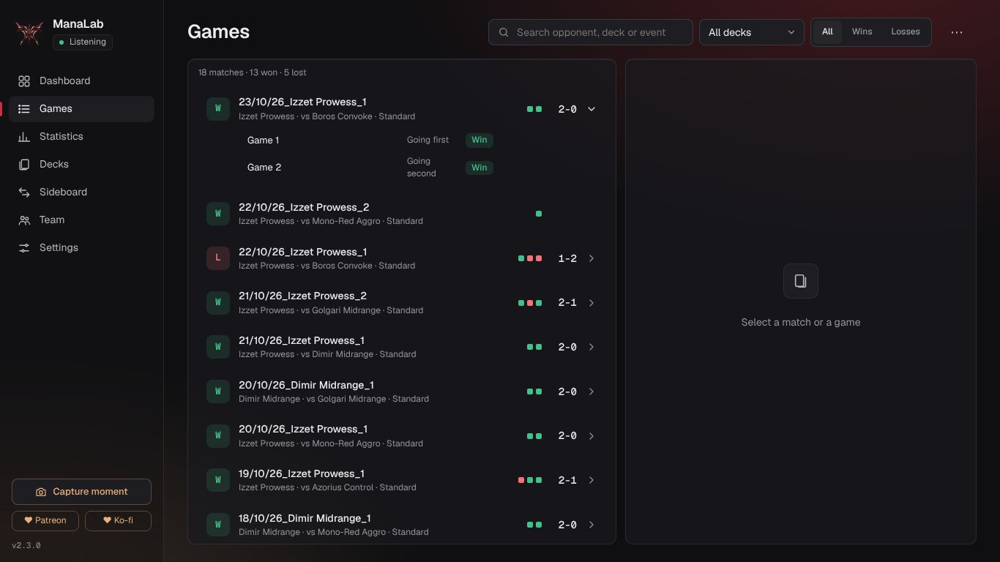
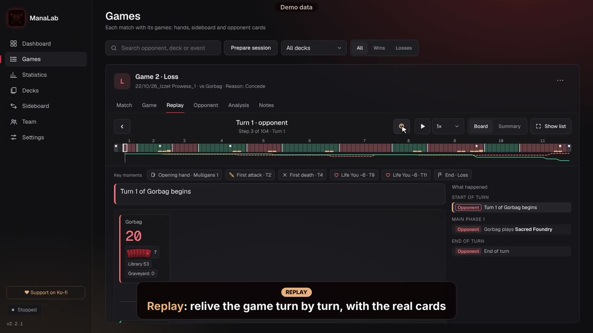
Vídeo en la web: https://manalab.es/guia/guia_manalab_es.html#video-replay
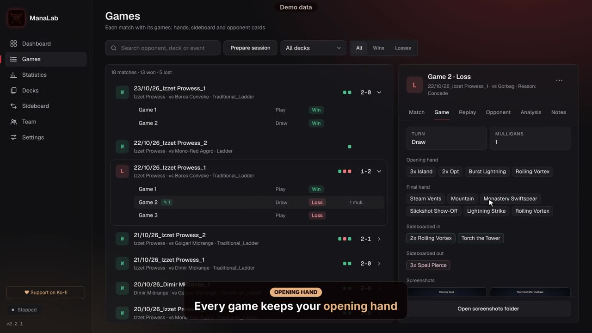
Vídeo en la web: https://manalab.es/guia/guia_manalab_es.html#video-opening-hand-mulligans
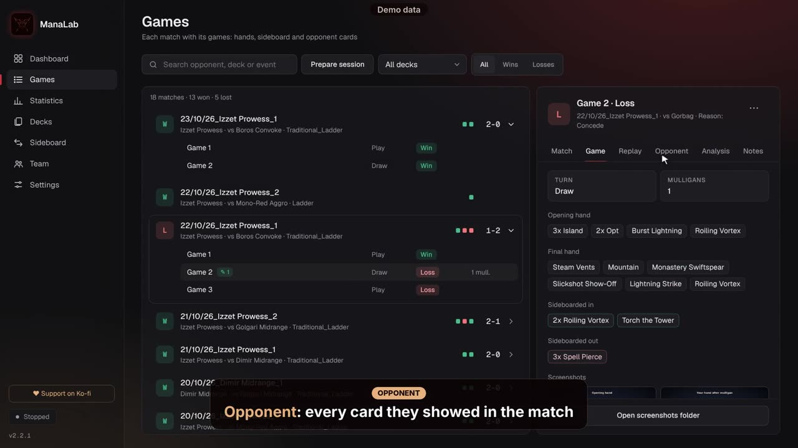
Vídeo en la web: https://manalab.es/guia/guia_manalab_es.html#video-opponent
Importar partidas
En Partidas, «⋯» › «Importar partidas» trae partidas de dos sitios: un archivo .manalab que te pase otra persona (lo crea «Exportar partida» en el menú «⋯» de cada partida) o un log de Arena o Magic Online: un Player.log de Arena o un mtgo.log de Magic Online, con partidas que jugaste con ManaLab cerrado o en otro PC.
Eliges qué partidas importar y las que ya tienes quedan marcadas, así que no se duplican. Las importadas tienen repetición, manos, mulligans, mazo, notas y etiquetas del coach, pero no capturas ni análisis con IA.
Las partidas de otro jugador llevan su marca y nunca cuentan en tus estadísticas, tendencias, informes ni en el equipo. Las que importas de tu propio log sí cuentan como tuyas.
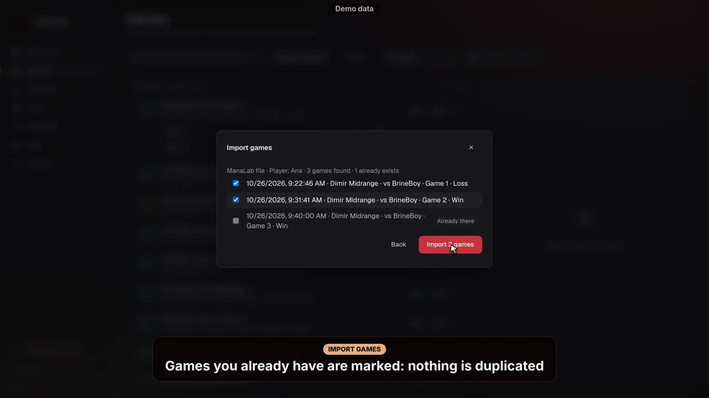
Vídeo en la web: https://manalab.es/guia/guia_manalab_es.html#video-import-games
Capturas y momentos destacados
ManaLab hace capturas solo: la mano inicial, cada mulligan y el resultado. Puedes apagarlas en Ajustes › Partidas, con un interruptor para Arena y otro para Magic Online.
También puedes guardar una captura del momento que quieras, en Arena y en Magic Online. Es un momento destacado y funciona aunque tengas apagadas las capturas automáticas.
- Pulsa F8 (puedes cambiar la tecla en Ajustes › Partidas, en «Capturas y momentos destacados»).
- O pulsa el botón «Capturar momento» que sale sobre el juego.
- O pulsa «Capturar momento» en la barra lateral de ManaLab.
Los botones solo aparecen mientras hay una partida en curso.
Después, en la pestaña Partida, abre la captura y escribe una nota sobre ese momento.
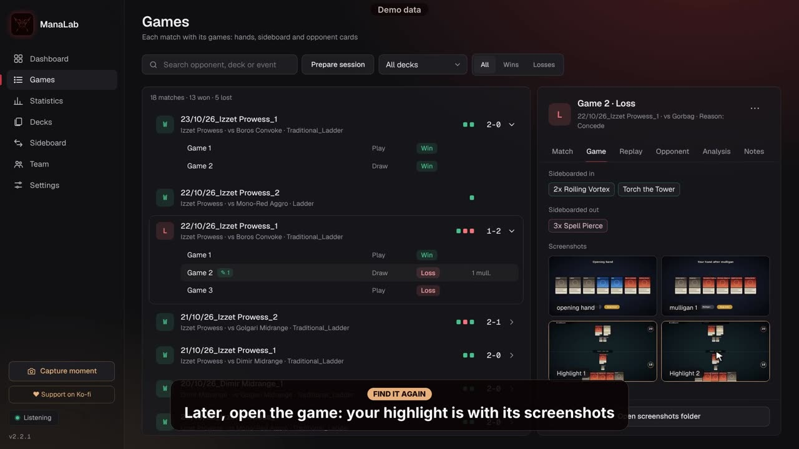
Vídeo en la web: https://manalab.es/guia/guia_manalab_es.html#video-capture-moment
Notas y errores
En la pestaña Notas de cada partida marcas los errores que cometiste (con etiquetas) y escribes lo que quieras recordar. Estos errores son la base del informe que puedes enviar a tu coach y de las estadísticas de errores repetidos.
Mazos
Aquí aparecen los mazos que ManaLab ha encontrado en tus partidas. Desde esta pantalla puedes:
- Cambiar el nombre de un mazo, o volver al que usa Arena con «Usar nombre de Arena». En Magic Online el mazo toma el nombre con el que lo guardaste si la lista coincide exactamente; si no, ManaLab lo nombra por sus colores.
- Elegir una variante cuando un mazo tiene más de una lista, y ver las estadísticas de cada carta.
- Comprobar tus matches y tu porcentaje con el mazo. Mazos cuenta matches, no partidas sueltas, y los matches sin terminar no cuentan.
Para revisar tus partidas con los últimos mazos del meta, ve a Ajustes › Cartas e idioma.
Estadísticas: tus porcentajes
Con los dos filtros de arriba, Formato y Mazo, eliges qué cubren las estadísticas. Cada partida guarda su formato real, así que puedes mirar un formato cada vez. Ves:
- Tus matches, partidas y rachas, y un gráfico de los últimos días.
- Un desglose por mulligans, primero / segundo, mazo y rival.
- La tabla de matchups, que te dice contra qué mazos ganas y contra cuáles pierdes, con el resultado de la partida 1 y el de después del sideboard. Un asterisco (*) indica menos de 10 partidas.
- «Lo que más se repite»: los errores que marcaste, en 30 días, 90 días o todo el historial.
El mazo del rival se nombra comparando sus cartas con los mazos del meta más jugados del formato de la partida, que se actualizan cada 3 días (Ajustes › Cartas e idioma). Si nada encaja con claridad, se nombra por sus colores.
El menú «⋯» tiene «Informe HTML» y «Exportar para el coach».
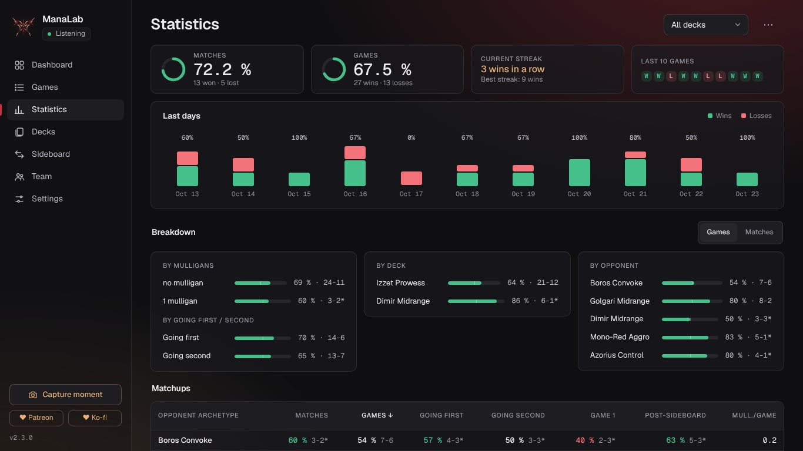
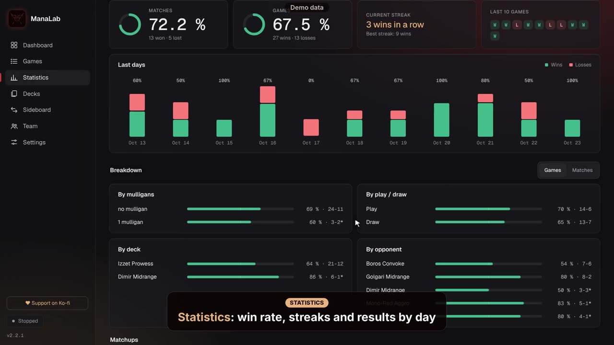
Vídeo en la web: https://manalab.es/guia/guia_manalab_es.html#video-statistics
Sideboard: tu plan por matchup
Elige tu mazo y tu rival. ManaLab muestra tus resultados en ese matchup (todas las partidas, partida 1, después del sideboard, primero y segundo) y sugiere qué sacar y qué meter, cada cosa con su nivel de confianza, según tus propias partidas.
Para cada matchup puedes apuntar qué metes (Meto) y qué sacas (Saco), y escribir tu plan (Mi plan). Se guarda solo y aparece en el informe para el coach. Más abajo ves los cambios que has hecho y cómo rinde cada una de tus cartas. En Magic Online no cuentan las partidas cuyo banquillo nunca se confirmó.
Con suscripción, «Pedir plan a la IA» te propone un plan de sideboard basado en tus partidas de ese matchup.
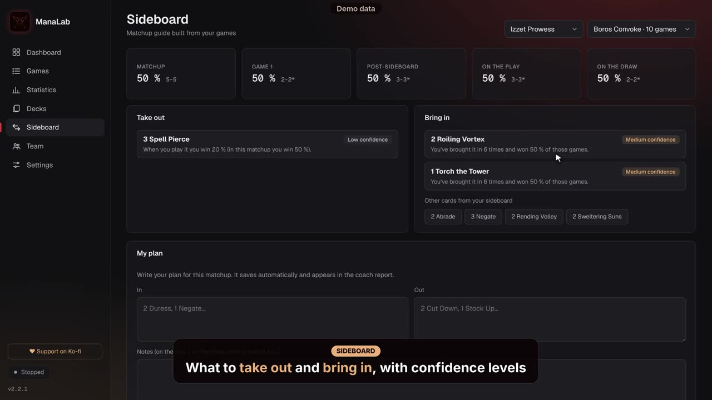
Vídeo en la web: https://manalab.es/guia/guia_manalab_es.html#video-sideboard-guide
Overlay: tu mazo sobre el juego
El overlay son dos paneles sobre la ventana del juego, en Arena y en Magic Online. Mi panel muestra las cartas que te quedan en la biblioteca, la probabilidad de robar cada una y una fila de Tierras. El panel del rival muestra las cartas que ha jugado o enseñado y cuántas copias has visto. Solo enseña información pública o lo que se puede deducir de lo jugado.
Aparece cuando el juego es la ventana activa, en ventana o en ventana sin bordes (no en pantalla completa exclusiva). Si el Panel dice «Ventana no detectada», abre el juego en ventana o en ventana sin bordes. En Ajustes › Overlay puedes elegir:
- «Mostrar el overlay» (activado por defecto) y «Probar sobre Arena», que lo enseña 10 segundos.
- El formato (completo, compacto o minimalista), los colores (con una paleta para daltónicos) y el alto contraste.
- Su tamaño, su opacidad y su posición.
- Cuándo se muestra: siempre, o solo al pasar el ratón por una zona.
- Qué mostrar en cada panel, con un interruptor para cada elemento.
Lista de tierras: pasa el ratón por la fila «Tierras» de Mi panel y se abre una lista con cada tierra que te queda, sus copias sobre el total y la probabilidad de robarla a continuación. Funciona igual en Arena y en Magic Online. Se activa en Ajustes › Overlay › Qué mostrar › Mi panel: Lista de tierras al pasar el ratón por «Tierras» (activada por defecto; necesita la fila de Tierras).
En Magic Online, cuando el registro trae líneas de la mesa, ManaLab deduce tu mano y tu biblioteca y enseña sus probabilidades. Cuando no trae ninguna, el overlay solo muestra la lista del mazo, con las copias que quedan y las totales: sin mano, sin número de cartas en la biblioteca y sin probabilidad de robo. Nunca enseña números inventados. Tras un cambio de banquillo puede mostrar «Lista sin confirmar», probabilidades con ≈ y «≥ N cartas fuera (sin identificar)» (mira Banquillo en Magic Online).
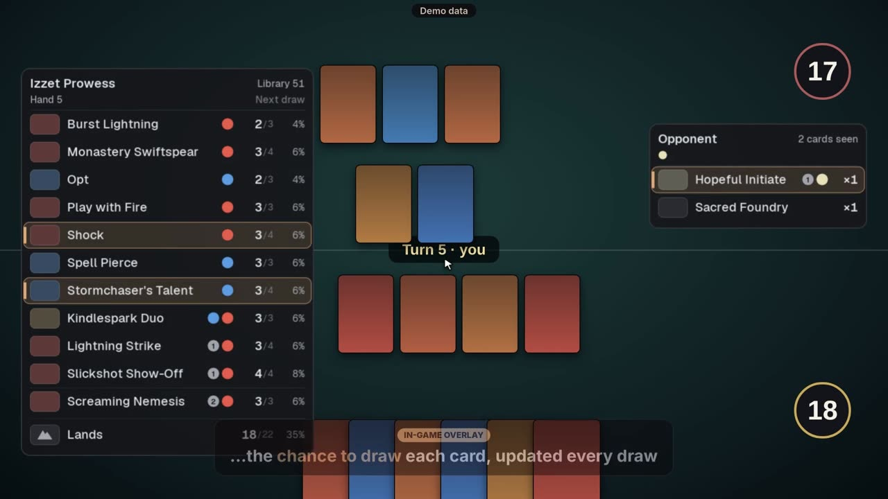
Vídeo en la web: https://manalab.es/guia/guia_manalab_es.html#video-in-game-overlay
Coach IA: análisis de derrotas
El coach IA explica qué salió mal en una derrota y qué probar la próxima vez. Es lo único de pago de ManaLab: 5 € al mes. Antes puedes probarlo gratis.
- Suscríbete en Ko-fi (botón «Suscribirme en Ko-fi» en Ajustes › Equipo e IA o en la pestaña Análisis). Recibirás un código por correo.
- Ve a Ajustes › Equipo e IA, pega el código en «Código de suscripción» y pulsa «Comprobar».
- Abre una derrota en Partidas y ve a la pestaña Análisis.
- Si quieres, escribe una pregunta concreta, por ejemplo: «¿debí hacer mulligan?» o «¿ataqué mal en el turno 5?».
- Pulsa «Analizar con IA». Tarda unos segundos. La respuesta queda guardada, así que no pagas dos veces por la misma partida.
Prueba gratis: pulsa «Pedir prueba gratis» (en Ajustes › Equipo e IA o en la pestaña Análisis). Se abre tu programa de correo con un mensaje preparado. Envíalo y te respondemos con un código para 5 análisis, válido 30 días. No hace falta tarjeta ni cuenta. Introduces el código como se explica arriba.
Cada código tiene un límite diario, y la pestaña te dice cuántos análisis te quedan. Solo se pueden analizar tus propias partidas, no las importadas.
Solo se envían los datos de la partida que analizas: tu mazo y sideboard, las cartas del rival vistas, la cronología de la partida y un breve resumen de las otras partidas del match. Nunca se envían tu nombre, el de tu rival ni el archivo de registro completo.
Exportar para el coach y Equipo
«Exportar para el coach» (en el menú «⋯» de Estadísticas) crea una página con tu resumen, tus matchups, tus errores marcados y tus partidas con sus notas. Se abre en el navegador: desde ahí puedes imprimirla o guardarla como PDF y enviarla a tu coach.
En Partidas, «⋯» › «Preparar sesión» te deja marcar las partidas que quieres repasar y «Crear informe de sesión» crea un único informe con tus manos, mulligans, momentos clave, resumen por turnos, notas y momentos destacados. Puedes ocultar el nombre de tus rivales. Se abre en el navegador y funciona sin conexión: imprímelo o guárdalo como PDF.
Más en la web: Guía para coaches: cómo revisar a un alumno.
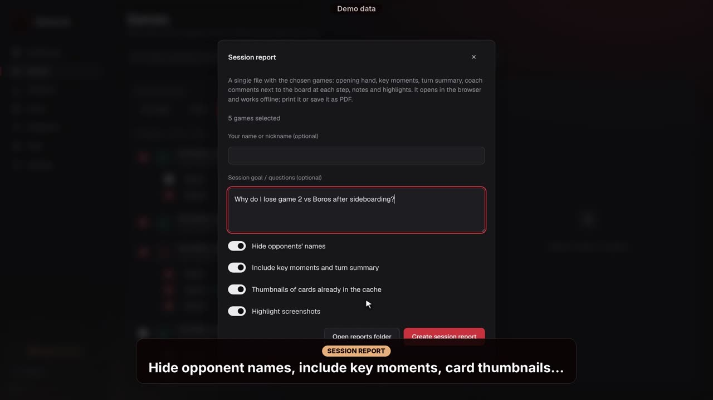
Vídeo en la web: https://manalab.es/guia/guia_manalab_es.html#video-prepare-session
En Equipo puedes compartir partidas y notas con tu equipo a través de una carpeta común (Google Drive, Dropbox u OneDrive). Primero configúralo en Ajustes › Equipo e IA: carpeta del equipo, tu nombre y tu rol (jugador o coach), y pulsa «Sincronizar ahora». Cada persona escribe solo en su subcarpeta. También se comparten las capturas con sus notas (puedes desactivarlo en Ajustes › Equipo e IA) y puedes ocultar el nombre de tus rivales.
En la pantalla Equipo, cada partida de un compañero se ve con el mismo detalle que las tuyas: manos, capturas con sus notas, repetición, mazo del rival y notas. Si eres coach, escribes tu nota en la pestaña Notas.
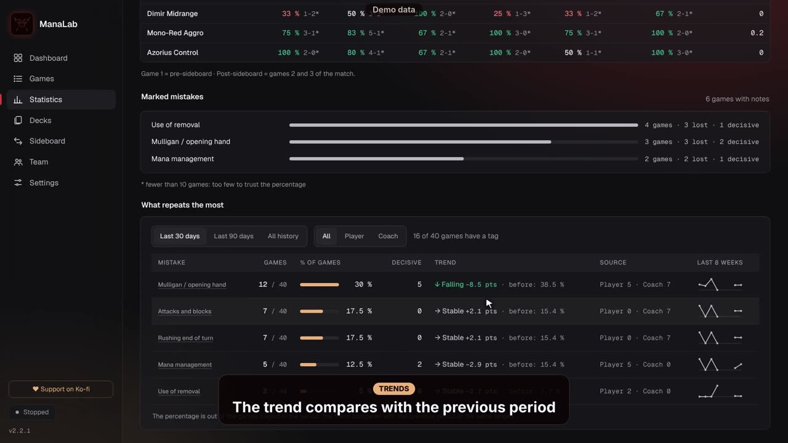
Vídeo en la web: https://manalab.es/guia/guia_manalab_es.html#video-coach-tags-trends-team
Ajustes
Los ajustes se guardan solos y cada cambio se aplica al momento. El menú tiene cinco secciones:
- Partidas: las rutas del Player.log de Arena y del mtgo.log de Magic Online (solo si no se encuentran solas), los interruptores de capturas, y el botón y el atajo de «Capturar momento».
- Overlay: todo lo del overlay, y la pregunta del banquillo de Magic Online.
- Cartas e idioma: la consulta a Scryfall cuando falta una carta, la base de datos de cartas, el idioma de la interfaz (ManaLab está en 9 idiomas; el cambio pide reiniciar) y el de los nombres de cartas, y los mazos del meta.
- Equipo e IA: la carpeta del equipo, tu nombre y tu rol, lo que compartes y tu código de suscripción de IA.
- Datos y acerca de ManaLab: la carpeta de datos, la guía de inicio, «Reportar un bug», el aviso de versión nueva y «Buscar actualizaciones».
Reportar un bug
Si algo no funciona, puedes contárnoslo desde la propia app:
- Abre Ajustes › Datos y acerca de ManaLab y pulsa «Reportar un bug».
- En «¿Qué pasó?» describe el problema. Si quieres, añade lo que esperabas y tu correo, para que te respondamos.
- Deja activado «Adjuntar registro.log (recomendado)» y pulsa «Enviar reporte».
El cuadro te enseña exactamente qué se envía: la versión de ManaLab, la versión de tu sistema operativo, el idioma de la interfaz, si usas Arena o Magic Online, un identificador anónimo de tu PC (para limitar los reportes al día) y, si el adjunto está activado, las últimas líneas de registro.log, sin códigos, claves ni tu nombre de usuario. Nunca se envían tus partidas ni tus mazos.
Sin conexión, el reporte se guarda y se envía después: se guardan hasta 3 y caducan a los 7 días.
Actualizar ManaLab
Desde la versión 2.1.3, ManaLab se actualiza solo. Al abrirse y una vez al día comprueba si hay una versión nueva; si la hay, arriba del Panel sale un aviso.
- En el aviso, pulsa «Ver novedades» si quieres leer qué trae.
- Pulsa «Actualizar ahora». ManaLab descarga la versión nueva, se cierra y se vuelve a abrir ya actualizado. No sale el aviso de Windows. Si tu copia no puede actualizarse sola, el cuadro ofrece «Descargar el ZIP a mano».
Tus partidas, capturas, ajustes y el código de suscripción se guardan aparte, en %LOCALAPPDATA%\ManaLab, así que no se pierden al actualizar.
Si tienes la 2.1.0, 2.1.1 o 2.1.2 (podían abrirse y cerrarse sin mostrar la ventana), actualiza a mano por última vez: descarga el ZIP desde manalab.es, botón derecho › Propiedades › marca «Desbloquear» › Aceptar, cierra ManaLab y descomprime el ZIP encima de su carpeta.
Puedes comprobarlo cuando quieras en Ajustes › Datos y acerca de ManaLab › «Buscar actualizaciones», y desactivar el aviso con «Avisar cuando haya una versión nueva».
Si tienes la versión 2.0.1 o anterior, no verás el aviso: descarga la última versión desde manalab.es.
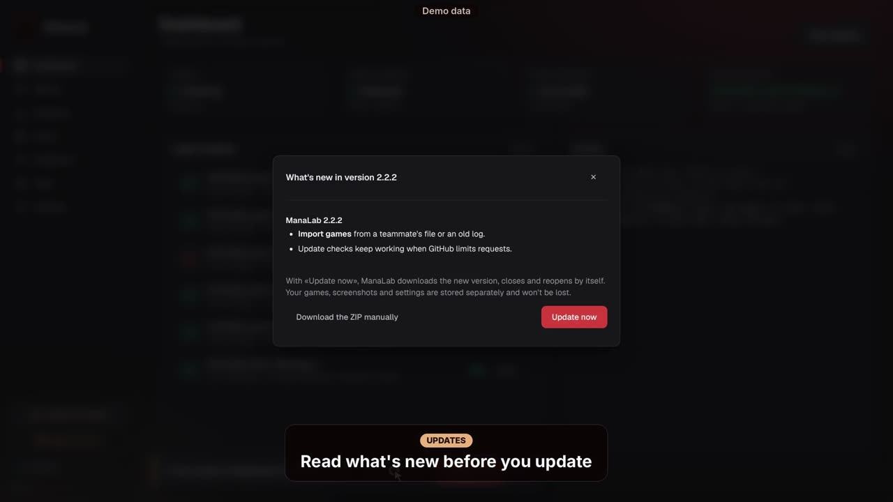
Vídeo en la web: https://manalab.es/guia/guia_manalab_es.html#video-in-app-updates
Privacidad
Tus partidas, capturas y estadísticas se quedan en tu PC.
- ManaLab no modifica Arena ni Magic Online, no lee su memoria y no se conecta a sus servidores.
- De Arena lee el Player.log. De Magic Online lee solo los archivos de registro que el juego deja en tu PC, como mtgo.log, nunca lo que se ve en su ventana. Para el overlay y las capturas solo necesita saber dónde está la ventana del juego.
- Mientras las capturas están activadas (lo están por defecto, con un interruptor por juego en Ajustes › Partidas), guarda imágenes de la ventana del juego.
- Una vez al día pregunta a GitHub si hay una versión nueva (si no responde, consulta manalab.es, sin datos tuyos). También descarga los mazos del meta y consulta nombres e imágenes de cartas en Scryfall. Puedes desactivarlo en Ajustes.
- Solo envía datos cuando tú lo pides: el análisis con IA (los datos de esa partida, sin nombres), un reporte de bug (mira arriba), o Equipo y exportar una partida, que comparten lo que tú eliges. Nunca tu historial.